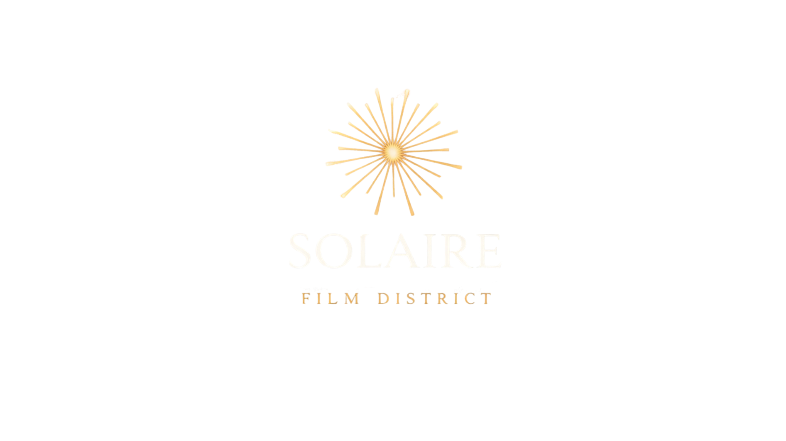

Un projet de campus de production audiovisuelle durable situé entre Sète et Montpellier dans la région Occitanie, visant à créer une infrastructure professionnelle capable d’accueillir des productions cinématographiques, télévisuelles et numériques internationales tout en contribuant au développement économique, à la formation des talents et à l’innovation dans les pratiques de production durable.
A sustainable audiovisual production campus proposed between Sète and Montpellier in southern France. The project aims to create a professional infrastructure capable of hosting international film, television and digital media productions while contributing to regional economic development, skills training and innovation in sustainable production practices.
Infrastructures de production audiovisuelle
Solaire Film District a pour objectif de créer un campus de production audiovisuelle professionnel capable d’accueillir des productions cinématographiques, télévisuelles et numériques internationales dans un environnement de travail intégré.
Le projet prévoit la création de plateaux de tournage insonorisés et climatisés, d’ateliers de construction de décors, d’espaces techniques, de bureaux de production et de post-production ainsi que d’infrastructures logistiques adaptées aux équipes et aux équipements.
L’ensemble du site est pensé pour permettre aux productions de réunir sur un même lieu les principales étapes de fabrication d’un projet audiovisuel.
Production Infrastructure
Solaire Film District aims to create a professional audiovisual production campus capable of hosting international film, television and digital media productions within an integrated working environment.
The project plans to include soundproofed and climate-controlled sound stages, set construction workshops, technical facilities, production and post-production offices as well as logistics spaces for crews and equipment.
The campus is designed so that productions can bring together the main stages of filmmaking in one location.
Services de production et accompagnement des tournages
Le campus vise à offrir aux productions un environnement de travail efficace permettant de rassembler sur un même site les ressources techniques, humaines et logistiques nécessaires à la fabrication d’un projet audiovisuel.
Les équipes de production pourront accéder à des prestataires spécialisés, à des compétences techniques locales et à un réseau de services professionnels permettant d’accompagner les différentes étapes d’un tournage.
Production Services and Industry Support
The campus aims to provide productions with an efficient working environment where technical, human and logistical resources can be brought together in one place.
Production teams will benefit from access to specialist service providers, local technical expertise and a network of professional services supporting the different stages of filmmaking.
Accessibilité et localisation stratégique
Situé entre Sète et Montpellier dans la région Occitanie, le projet bénéficie d’une localisation attractive à proximité des principaux réseaux de transport.
La région est accessible par train à grande vitesse, par les aéroports internationaux de Montpellier et de Toulouse, ainsi que par un réseau routier reliant rapidement les grandes villes européennes.
Cette localisation permet aux productions internationales d’accéder facilement aux infrastructures du campus.
Accessibility and Strategic Location
Located between Sète and Montpellier in the Occitanie region, the project benefits from an attractive location close to major transport networks.
The region is accessible via high-speed rail, the international airports of Montpellier, Beziers and Toulouse, and a road network connecting quickly to major European cities.
This location allows international productions to reach the campus easily.
Coopérations internationales et coproductions
Solaire Film District a vocation à accueillir des coproductions internationales et à favoriser les collaborations entre producteurs européens et internationaux.
La localisation en France permet aux productions de bénéficier des dispositifs nationaux de soutien à l’audiovisuel ainsi que des mécanismes de coproduction internationale.
International Collaboration and Co-Production
Solaire Film District aims to host international co-productions and encourage collaboration between European and international producers.
Its location in France allows productions to access national audiovisual support mechanisms and international co-production frameworks.
Production durable et performance environnementale
Le projet intègre dès sa conception des principes de production audiovisuelle durable et d’efficacité énergétique.
Le campus ambitionne de réduire l’empreinte environnementale des tournages grâce à des infrastructures énergétiques performantes, à l’intégration d’énergies renouvelables et à une gestion optimisée des ressources.
Sustainable Production and Environmental Performance
The project integrates sustainable production principles and energy efficiency from its earliest design stages.
The campus aims to reduce the environmental footprint of productions through efficient energy infrastructure, renewable energy integration and responsible resource management.
Recherche et innovation
Solaire Film District souhaite également développer un pôle d’expérimentation et d’innovation autour des technologies audiovisuelles et des pratiques de production durable.
Des partenariats avec universités, centres de recherche et acteurs industriels permettront d’explorer de nouvelles méthodes de production et d’amélioration des performances environnementales.
Research and Innovation
Solaire Film District also aims to develop a hub for experimentation and innovation in audiovisual technologies and sustainable production practices.
Partnerships with universities, research centres and industry partners will support the exploration of new production methods and improved environmental performance.
Formation et développement des compétences
Le projet prévoit de développer des collaborations avec universités, écoles de cinéma et centres de formation afin de soutenir l’apprentissage des métiers de l’audiovisuel et de renforcer les compétences professionnelles sur le territoire.
Training and Skills Development
The project plans to develop collaborations with universities, film schools and training institutions in order to support the development of audiovisual skills and strengthen professional expertise in the region.
Développement économique régional et ouverture culturelle
En attirant des productions internationales, le projet contribuera au développement économique régional en mobilisant les entreprises locales dans les domaines techniques, logistiques, artisanaux et de services.
Le campus prévoit également un espace culturel dédié aux arts visuels liés au cinéma et à la création audiovisuelle, permettant d’organiser expositions et événements ouverts au public.
Regional Economic Development and Cultural Engagement
By attracting international productions, the project will contribute to regional economic development by mobilising local businesses across technical, logistical, creative and service sectors.
The campus also plans to develop a cultural space dedicated to visual arts connected to cinema and audiovisual creation, including exhibitions and public events.
Projet développé par Silver Road Media
Solaire Film District est un projet initié et développé par Silver Road Media, société de développement de projets audiovisuels basée en France.
Developed by Silver Road Media
Solaire Film District is a project initiated and developed by Silver Road Media, an audiovisual project development company based in France.